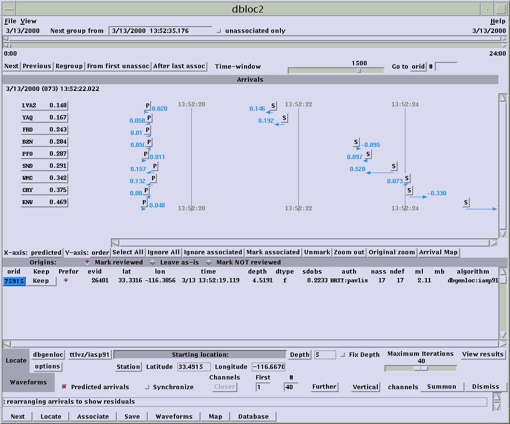
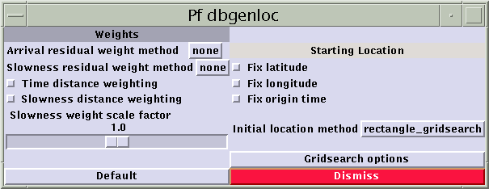
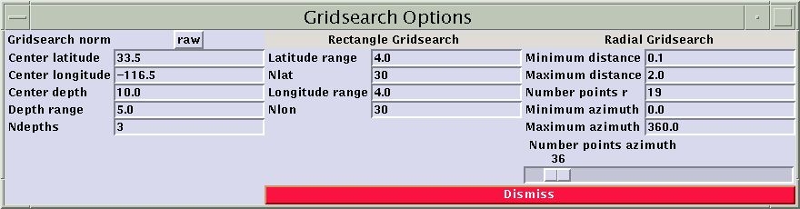
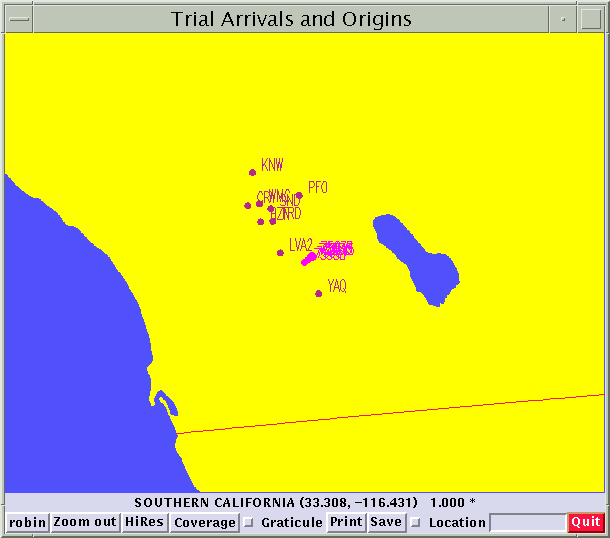
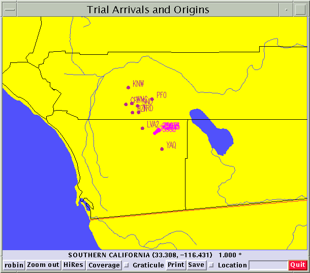
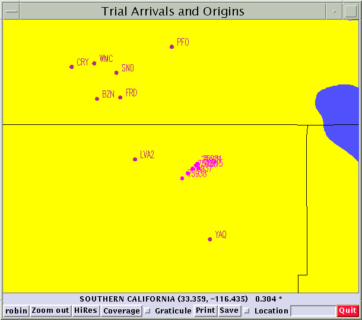

dbloc2 tutorial
Purpose: This exercise will
teach you the basics of locating events with dbloc2 using a test data set
from the anza network in southern California.
Preparation:
-
You should create a new directory to contain the data you will use for
this exercise. I will refer to this directory from now on as $datadir
as if I had done something like: set datadir=/u/pavlis/location_exercise.
You will, of course, use a different directory name.
-
You need to get the test data set which is in a file called "location_exercise.tar".
Just click
here and your browser should download a file called location_exercise.tar.gz
. Make sure you download the data into $datadir.
-
This is a compressed file. Uncompress it with: gunzip location_exercise.tar.gz
-
Run tar to extract all the files as follows (assuming the current directory
is $datadir):
tar xvf /s/pavlis/location_exercise.tar
-
type: dbloc2 anza
Get the feel for the basic buttons:
You should see a display like this:

-
Note the overall organization of the control panel. The top section
(above the "arrivals" bar) is used to move through the database (in time
order), the middle section displays residual patterns and current location
estimates, and the bottom section controls the location program(s) and
interaction with dbpick.
-
Push the "Locate" button in the very bottom row of button widgets.
You should see a new location appear in the central section that will be
nearly identical to the one already tabulated. They will differ slightly
due to a fairly coarse convergence criteria used for this solution
and the fact that this solution started from a very crude initial estimate.
That is, the default uses the coordinates shown as a fixed initial location:
33.4915 latitude, -116.6670 longitude, and a depth of 5 km. To see
this push the "View Results" button which displays the convergence history.
(Push "Dismiss" to make this window go away. Don't use the window
manger's control button in the upper left corner.)
Initial location method:
-
Let's experiment with an alternative initial location method. Notice
the lower control panel button titled "Starting location:". It is
marked a different color on startup in dbloc2. Click MB1 on this
field and it will change to "Program will estimate starting location".
Now push the locate button again.
-
You will probably again get a slightly different location, and you may
notice it took a bit longer to compute the solution. "View results"
will show you the convergence history is different this time requiring
quite a few less iterations. To see what we just did, find the button
labeled "options" immediately below "dbgenloc" in the lower left corner
and push it. This will bring up a control panel like this:

This is the main control panel for the location program.
For now we are interested in the button labeled "Initial location method"
currently set to "rectangle_gridsearch". Push that button and the
following panel should appear:

-
This panel defines the rectangular area (in latitude and longitude units)
searched to obtain a starting location. The center location is essentially
a coordinate system origin around which the grid is centered. For
the settings above the grid is 4 degrees by 4 degrees so it runs from 31.5
to 35.5 latitude and -118.5 to -114.5 longitude. The grid 3d and
runs in depth also using a similar centered scheme. The above case
uses 3 depths at 7.5, 10, and 12.5 km.
-
Experiment with some of these parameters. Try increasing the density
of the grid or widening the area of the search in map area or depth and
see what, if anything, happens to the location. (Note: (1)
If you make the grid too large, you may wait a fairly long time and have
dbloc2 announce a "timeout" error. If you get this, it is wise to
be patient because dbgenloc may still be computing. A grid search
can take a long time if you make the grid very dense. (2) You need
to push "Dismiss" for your changes to take effect.)
-
In the "pf genloc" window try some of the other gridsearch options.
The basic algorithm used in each is as follows:
-
"Radial gridsearch" uses a polar grid focused on the same central point
defined in the gridsearch option control panel. The same "Gridsearch
Options' window can be used to vary the parameters that define this grid.
This algorithm is most useful if you have data from a phased array that
provides slowness vector estimates. In that situation, it is useful
to put the central point at the array center.
-
S-P time takes the earliest arrival station with both and S and P time,
computes a rough estimate of the distance, and performs a radial
grid search at that radius only (i.e. in a circle). It is important
to note, however, that other gridsearch options control the details of
this search. The number of points searched on this circle is controlled
by the "Number of points azimuth" slider widget in the "Gridsearch Options"
window. And how many depths are searched depends upon the same settings
used for the rectangular grid. That is, if Ndepths is not one, the
regions searched will actually be a cylinder.
-
Nearest station is the classic nearest station method. The initial
depth is set in a fairly obscure way as the depth listed in the main dbloc2
control panel. This method works, but is not highly recommended as
modern computers tend to yield more stable solutions more consistently
with one of the grid search methods.
Note: before continuing, I suggest you set the initial location
mode to S-P time for the rest of this exercise. For these data it
tends to represent the best cost-performance tradeoff.
Other useful location controls:
For the next phase of this exercise it is a good idea to clear the location
window to get rid of some of the junk you created up to now. A simple
hack way to do this is to locate the "Next" button above the arrivals window
and push it, then push the adjacent "Previous" button.
-
Study the effects of fixing the depth. Locate the "Fix Depth"
label with the small button to it's left. Push the small square and
it should turn red. (This indicates locations will be done with the
depth fixed.) Immediately to the left is a button labeled "Depth"
with a number to it's immediate right that is the current fixed depth to
us. The button is controlled by holding down MB1 over the "Depth"
button and using a pull down menu to select a group of preset depths.
-
Try computing solutions at 0, 5, 10,15, 20, and 25 km fixed depths.
Notice that the "dtype" field changes from "f" (which I guess stands for
free) to "g" (which the css3.0 book says means contrained by "geophysicist").
-
Compare the rms residual tabulated as "sdobs" in the location output panel.
Plot and hand in the curve and explain what it tells you about how well
the depth of this event is constrained.
-
Let's look at the results of this little test in map view also. Find
the "Arrival Map" button in the center right part of the control panel
and push it. You should get a display something like this:

Play with the HiRes, Coverage, and Graticule buttons. Enabling
everything there will give you this slightly different picture:

You can zoom the picture with a click/drag of MB1. To try move
the screen pointer to a point somewhere a bit north of LVA2, hold down
MB1, and drag the cursor to a point south of YAQ (A red box appears as
you do this showing the area to be zoomed in.) When you release MB1,
you will zoom the screen and get something like this:

You can repeat this to zoom in closer. To back up just push the
zoom out button.
Use dbpick to alter existing picks:
Now let's used dbpick to experiment with changing
some of the arrival times.
-
Push the "Summon" button in the lower right of the
control panel. This will bring up dbpick with a default display.
-
The default display brings up all vertical channels.
Directly left of the "Summon" button is one that presently says "Vertical".
This button is actually a menu you enable by pushing and hold MB1 over
this button and selecting alternatives. Try "All".
-
Because this data set has a mix of BH, HH, and LH
channels, the display you have now is less than ideal. The dbpick
command menu, however, is active so select the dbpick command window and
type: sc *:HH. (the trailing "." is necessary, not punctuation
here). This selects all the high frequency channels recorded at 100
sps.
-
You are welcome to change any of my picks as you
please, but one you might fix right off is the S pick on SND. The
location output shows you that it has a fairly high residual and suggest
is may be picked a bit late. Try moving this and other picks, rerunning
the locator (push locate button), and observing the results. Are
you able to improve on my picks?
Weighting in dbgenloc:
dbgenloc has a large collection of options related
to weighting. You should read the genloc_intro man page for more
details on all the options, but we will cover the basic ones here.
-
dbgenloc ALWAYS uses a set of weights controlled
by uncertainty picks set with dbpick. These weights are set in dbpick
by positioning the pointer OVER the arrival flag, hold down the shift key,
and depress MB1. A box will appear centered on the arrival flag.
This box shows the range you believe defines the uncertainty of this pick.
In location, the reciprocal of the time duration of this box is used to
weight each arrival. Consequently, if you make the box big, a pick
will get a very low weight but if you make is small it will receive a very
high weight. Experiment with this by artificially making one or more
picks have a large or very small uncertainty and observe the results.
Does it do what you expect?
-
dbgenloc has an optional residual weighting feature.
Here is the "options" control panel again for dbgenloc:
Notice the section titled "Weights" with
the labels "Arrival residual weight method" and "Slowness residual weight
method". The later is for array data, which is beyond the scope of
this exercise. We want to focus on the top label. The button
(labeled "none" above) is a pull down menu on which you will find the following
choices when you push that button with MB1: none, huber, thomson,
and bisquare. These are each a set of weighting functions used for
robust M-estimators and they are arranged in order of increasing aggressiveness
to killing outliers. For this exercise, choose "huber".
-
Move one of the picks to a ridiculous position (>
1 s off) and compare the results of "none" and "huber". What do you
find?
-
Move one or more other picks and see how well the
"robust" estimator works? Theoretically robust estimators can reduce
the impact of outliers. They generally work well if the there is
enough redundancy and the outlier is clearly an outlier (i.e. if all the
picks are bad, it is hard to tell which is wrong).
Picking and locating an event from scratch:
At this stage you want to first verify that you
have all the options back to a reasonable setting. Check that the
following are set:
Arrival residual weight method = huber
Initial location method = S-P time
Depth is NOT fixed (in main control panel)
Then follow this procedure for each event in the
data set:
-
Select the dbpick waveform window.
-
In the dbpick waveform window type "N" (without the
quotes). This will bring up new waveforms that may look like pure
noise.
-
Use the zoom out controls on dbpick (shift MB3) and
zoom in (shift MB1) to look at these waveform segments to find the event.
They currently have no picks on them at all, so you will truly have to
start from scratch. Note these events are most easily seen by selecting
the 1 Hz HP (highpass) filter.
-
Pick P and S on each station for which it is reasonable
to do so. You can adopt your own strategy, but a good one is to lay
down rough picks with the full view, then use the "Magnify" option (selected
with MB3 in the pulldown menu with the pointer over the arrival flag) for
each station to work through the data in some rational order (e.g. from
the top down). As you pick set the times, be sure you set the uncertainties
using the method described above (shift MB1 over the arrival flag) or the
program will use default weights.
-
When you have made all the picks you think are reasonable,
try locating the event.
-
Aim to get sdobs below 0.25 s. If you have
any large residuals, double check your picks and verify all your uncertainty
picks are reasonable and try again. Note, it is considered cheating
and is, in fact, a very bad thing to do too much manual iteration to get
the residuals to very small values. i.e. don't start tweeking every
residual to get sdobs as small as possible.
-
You may find it necessary to completely turn off
one or more picks to get a stable solution. This can be done by pointing
at the glyph for each phase in the residual window and clicking MB1 (You
will note this changes the label -- i.e. P, S, etc. -- from black to grey.
This indicates the arrival is discarded from the solution.)
Repeat this procedure for each of the four
events in this tutorial data set.
Plot up your results:
This is easy with the dbmapevents program.
Try:
dbmapevents anza PFO 1.0
This will bring up a window displaying a map of
events centered on the station PFO. There is no way to kill the window
other than to find the "close" button set by the window manager (For Motif
(CDE) it is the little tab in the upper left hand corner with the pulldown
menu.) When you exit the program you will find a file in the directory
you ran the program from called "dbmapevents.ps". Use the lpr command
to send this postscript file to the printer.
You are welcome to experiment with some of the
options on dbmapevents that are described in the man page.